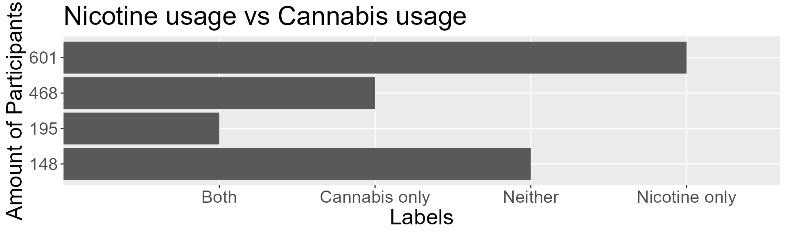
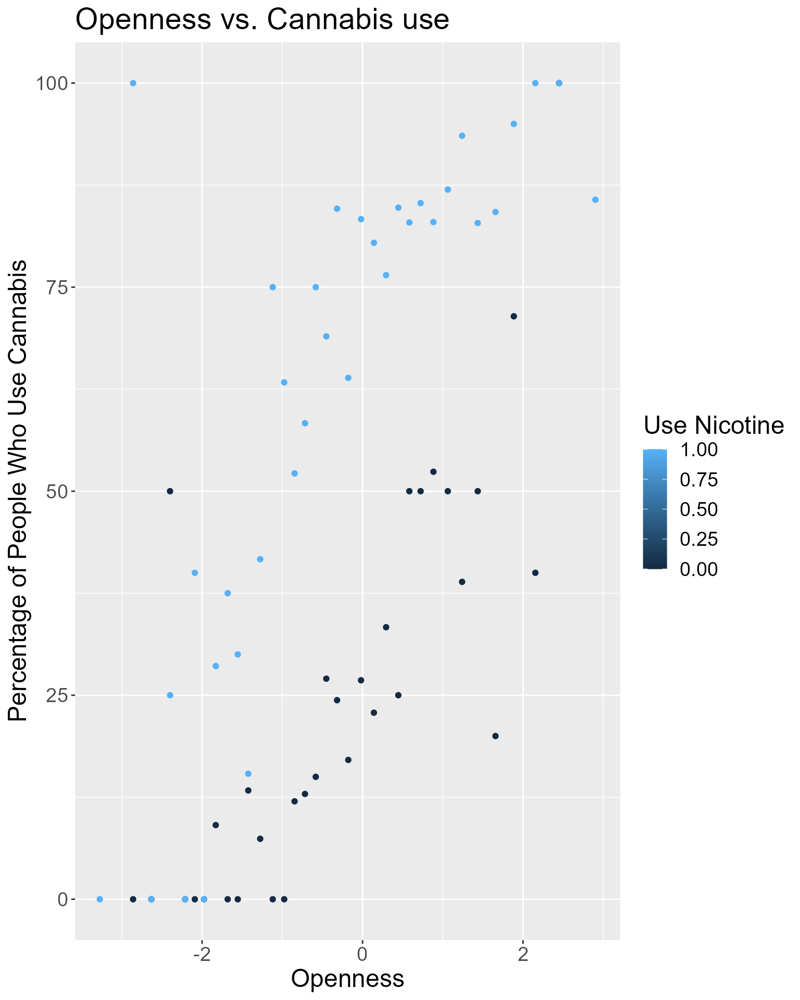
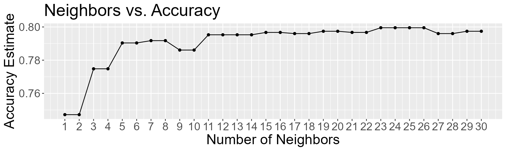

group05-vignette.RmdData analysis requires a structured approach that involves cleaning, wrangling, modeling, and evaluating the performance of different models. However, these tasks can be challenging, and traditional approaches of writing large code chunks to run this kind of analysis can be time-consuming and error-prone.
This is where the package group05pkg comes in!
It provides a set of easy-to-use functions that simplify the process of running a classification analysis such as:
This document introduces you to group05pkg’s basic set of tools, and shows you how to apply them to run a classification analysis.
To explore the package, we will be using the
drug_consumption data set. This data set has
1884 rows and 32 columns.
url <-"https://archive.ics.uci.edu/ml/machine-learning-databases/00373/drug_consumption.data"
drug_consumption <- readr::read_csv(url)
colnames(drug_consumption) <- c(
"ID", "Age", "Gender", "Education", "Country", "Ethnicity",
"Nscore", "Escore", "Oscore", "Ascore", "Cscore",
"Impulsive", "SS", "Alcohol", "Amphet", "Amyl", "Benzos",
"Caff", "Cannabis", "Choc", "Coke", "Crack", "Ecstasy",
"Heroin", "Ketamine", "Legalh", "LSD", "Meth", "Mushrooms",
"Nicotine", "Semer", "VSA"
)
head(drug_consumption)
#> # A tibble: 6 × 32
#> ID Age Gender Education Country Ethnicity Nscore Escore Oscore Ascore
#> <dbl> <dbl> <dbl> <dbl> <dbl> <dbl> <dbl> <dbl> <dbl> <dbl>
#> 1 2 -0.0785 -0.482 1.98 0.961 -0.317 -0.678 1.94 1.44 0.761
#> 2 3 0.498 -0.482 -0.0592 0.961 -0.317 -0.467 0.805 -0.847 -1.62
#> 3 4 -0.952 0.482 1.16 0.961 -0.317 -0.149 -0.806 -0.0193 0.590
#> 4 5 0.498 0.482 1.98 0.961 -0.317 0.735 -1.63 -0.452 -0.302
#> 5 6 2.59 0.482 -1.23 0.249 -0.317 -0.678 -0.300 -1.56 2.04
#> 6 7 1.09 -0.482 1.16 -0.570 -0.317 -0.467 -1.09 -0.452 -0.302
#> # ℹ 22 more variables: Cscore <dbl>, Impulsive <dbl>, SS <dbl>, Alcohol <chr>,
#> # Amphet <chr>, Amyl <chr>, Benzos <chr>, Caff <chr>, Cannabis <chr>,
#> # Choc <chr>, Coke <chr>, Crack <chr>, Ecstasy <chr>, Heroin <chr>,
#> # Ketamine <chr>, Legalh <chr>, LSD <chr>, Meth <chr>, Mushrooms <chr>,
#> # Nicotine <chr>, Semer <chr>, VSA <chr>We can break down our functions into 3 different groups:
The split_dataset() is a function that splits a data set
into training and test sets. The function takes in a data set, a strata
variable, and a predictor variable as inputs and performs a stratified
random split of the data set into training and testing subsets.
The data_set argument is a data frame containing the original data
that will be split into training and testing sets. The strata_variable
argument is a string specifying the variable in data_set that will be
used as a stratification variable for the split. predictor
is a string that indicates the variable in the data_set that is going to
be considered as the predictor variable.
The function returns a list that contains the training set and testing set.
For example, we can use split_dataset() function by
providing data_set = drug_consumption, strata_variable = “Cannabis” and
predictor = “Nicotine”. This will split our
drug_consumption into train and test sets.
split_data <- split_dataset(drug_consumption, "Cannabis", "Nicotine")
train_data <- split_data[[1]]
test_data<- split_data[[2]]The wrangle_training_data() function takes in a training
data set, a predictor variable, a strata variable, and group labels as
inputs, and returns a data frame with 4 columns that are named as
“predictor”, “strata_variable”, “n”, and “label”.
The function groups the training data by the predictor and strata variable, summarizes the number of observations in each group, and lastly adds a label column with group labels that are defined by the user.
The training_data argument is a data frame that contains the training
data that is going to be wrangled and cleaned. The predictor argument is
a string or that specifies the variable in the training data that is
gonna be used as the predictor variable. The strata_variable parameter
is a string that specifies the variable in the training data to be used
as the stratification variable.group_labels is a strings to
be used as labels for the groups in the resulting data frame.
For example we can use wrangle_training_data() function
by providing training_data = train_data, strata_variable = “Cannabis”
and predictor = “Nicotine” and group_labels = labels where labels is
defined as
c("Neither", "Cannabis only", "Nicotine only", "Both").
As a result, the function will return a data frame with four columns: predictor, strata_variable, n, label.
labels <- c("Neither", "Cannabis only", "Nicotine only", "Both")
cannabis_and_nicotine <- wrangle_training_data(
train_data,
Nicotine,
Cannabis,
labels
)create_knn_spec()
create_knn_spec() is a function that creates a
specification object for k-nearest neighbor (KNN) models. The function
takes one argument, weight_func, which is a string that specifies the
weight function to use in the model.
The function creates a specification object using the
nearest_neighbor() function from the parsnip
package. The weight_func argument is used to set the weight function in
the specification object.
The neighbors parameter is set as a tuning parameter using the
tune() function. This means that the number of neighbors
will be selected based on the best performance during model
training.
The specification object is then set to use the kknn engine and set to classification mode. Finally, the function returns the specification object.
To use the create_knn_spec() function, you simply
provide a string for the weight_func argument. For example, to create a
specification object with a weight function of “rectangular”, you can
use the following code:
drugs_knn_spec <- create_knn_spec("rectangular")
drugs_knn_spec
#> K-Nearest Neighbor Model Specification (classification)
#>
#> Main Arguments:
#> neighbors = tune()
#> weight_func = weight_func
#>
#> Computational engine: kknncreate_recipe()
create_recipe() is a function that creates a recipe
object for use in a modeling workflow. The function takes two arguments:
data, a dataframe containing the data, and response_var, a string that
specifies the name of the response variable.
The function creates a recipe object using the recipe()
function from the recipes package. The
as.formula() function is used to create a formula where the
response variable is specified as the response_var argument, and all
other columns in the input dataframe are used as predictors.
The recipe object includes two steps: scaling and centering the
predictor variables.These steps are added to the recipe object using the
step_scale() and step_center() functions from
the recipes package. Finally, the function returns the
recipe object, which can be used in a modeling workflow.
To use the create_recipe() function, you need to provide
a dataframe for the data argument and a string for the response_var
argument. For example, to create a recipe object for the
drug_consumption dataframe with the response variable set to “Cannabis”,
you can use the following code:
drugs_recipe <- create_recipe(data = train_data, response_var = "Cannabis")
drugs_recipecreate_vfold()
create_vfold() is a function that creates a v-fold
cross-validation object for use in a modeling workflow. The function
takes three arguments: data, which is a dataframe containing the data,
v, which is an integer specifying the number of folds, and strata, which
specifies the name of the strata variable for stratified sampling.
The function creates a v-fold cross-validation object using the
vfold_cv() function from the rsample package.
The data and v arguments are passed to vfold_cv(), and the
strata argument is used for stratified sampling if provided. The
function then returns the v-fold cross-validation object.
For example, if you wanted to create a v-fold cross-validation object with 5 folds and stratified by the “Cannabis” variable, you can use the following code:
drugs_vfold <- create_vfold(train_data, 5, "Cannabis")
drugs_vfold
#> # 5-fold cross-validation using stratification
#> # A tibble: 5 × 2
#> splits id
#> <list> <chr>
#> 1 <split [1129/283]> Fold1
#> 2 <split [1129/283]> Fold2
#> 3 <split [1129/283]> Fold3
#> 4 <split [1130/282]> Fold4
#> 5 <split [1131/281]> Fold5create_grid()
create_grid() is a function that generates a grid of
values to tune over for the number of nearest neighbors in the k-nearest
neighbor classification model. It takes two arguments: min_neighbors,
which is an integer specifying the minimum number of neighbors to
include in the grid, and max_neighbors, which is an integer specifying
the maximum number of neighbors to include in the grid.
The function then creates a tibble containing a sequence of integers ranging from the specified min_neighbors to max_neighbors, inclusive. The tibble contains a single column named “neighbors” which represents the number of neighbors to use in the k-nearest neighbor model. Finally, the function returns the tibble.
For example, if you wanted to generate a grid of values to tune over for the number of nearest neighbors in the k-nearest neighbor classification model, where the minimum number of neighbors is 1 and the maximum number of neighbors is 30, you can use the following code:
drugs_grid <- create_grid(1, 30)
drugs_grid
#> # A tibble: 30 × 1
#> neighbors
#> <int>
#> 1 1
#> 2 2
#> 3 3
#> 4 4
#> 5 5
#> 6 6
#> 7 7
#> 8 8
#> 9 9
#> 10 10
#> # ℹ 20 more rowspredict_drugs_workflow
predict_drugs_workflow() is a function that predicts the
outcome of a target variable for new test data given a fitted KNN
workflow object.The function takes two arguments: knn_wf, which is a
fitted KNN workflow object, and test_data, which is a data frame
containing new test data to predict the outcome of cannabis usage.
The function uses the predict() function from the
stats package to predict the outcome of the strata variable
on new test data using the KNN model in knn_wf. The predicted outcome is
then combined with the original test data using
thebind_cols() function from the dplyr package
to create a new data frame containing the predicted outcome.
Finally, the function returns the new data frame containing the predicted outcome of the strata variable for the new test data. Additionally, the predicted outcome is written to the data folder.
For example, if you had a fitted KNN workflow object called drugs_real_workflow and a data frame of new test data called test_data, you could use the following code to predict the outcome of cannabis usage for the new test data and write the predicted outcome to the data folder:
drugs_pred <- predict_drugs_workflow(drugs_real_workflow, test_data)
drugs_pred
#> # A tibble: 472 × 9
#> .pred_class Age Gender Nscore Escore Oscore Ascore Nicotine Cannabis
#> <fct> <dbl> <dbl> <dbl> <dbl> <dbl> <dbl> <dbl> <fct>
#> 1 no 0.498 -0.482 -0.467 0.805 -0.847 -1.62 0 yes
#> 2 no 2.59 0.482 -0.678 -0.300 -1.56 2.04 1 no
#> 3 no -0.0785 0.482 -1.05 0.805 -1.12 -0.761 0 no
#> 4 yes 1.82 0.482 2.29 0.168 0.446 -1.62 1 yes
#> 5 no 0.498 -0.482 -0.348 -1.76 -2.40 -1.93 0 no
#> 6 no 1.09 -0.482 1.60 -3.27 -1.28 0.288 1 no
#> 7 yes 1.82 -0.482 -0.149 0.638 1.24 0.761 1 no
#> 8 no 1.82 0.482 -0.0519 -1.63 -3.27 -0.761 1 no
#> 9 no 0.498 0.482 0.0426 -1.51 -0.717 0.288 0 no
#> 10 no 0.498 0.482 -1.19 -0.806 0.141 -0.606 0 no
#> # ℹ 462 more rowshorizontal_hist()
horizontal_hist() is a function that creates a
horizontal bar plot from the data frame that is given as input. It takes
the specified variables as inputs and then it creates a histogram with
the given plot title, x-axis label, and y-axis label. The plot width and
height can also be changed according to user preference.
The data argument is the input data frame to be plotted x_var
argument is the name of the variable to be plotted on the x-axis, y_var
the name of the variable to be plotted on the y-axis, x_label is the
label for the x-axis, y_label is the label for the y-axis, plot_title is
the title for the plot, plot_width is the width of the plot
andplot_height is the height of the plot.
For example, we can use horizontal_hist() function by
providing data = cannabis_and_nicotine, x_var = n, y_var = labels,
x_label =“Amount of Participants”, y_label = “Labels”, plot_title =
“Nicotine usage vs Cannabis usage”, plot_width = 10, and plot_height =
5. This will create a horizontal histogram as it can be seen below.
horizontal_hist(data = cannabis_and_nicotine,
x_var = n,
y_var = labels,
x_label = "Amount of Participants",
y_label = "Labels",
plot_title = "Nicotine usage vs Cannabis usage",
plot_width = 10,
plot_height = 5)
scatterplot()
scatterplot() is a function that takes the specified
variables as inputs and then it creates a histogram with the given plot
title, x-axis label, y-axis label and color legend label. The plot width
and height can also be changed according to user preference.
The data argument is the input data frame to be plotted, x_var
argument is the name of the variable to be plotted on the x-axis, y_var
argument is the name of the variable to be plotted on the y-axis,
color_var argument is the name of the variable to be used for color
coding, x_label argument is the label for the x-axis, y_label argument
is the label for the y-axis, color_label argument is the label for the
color legend, plot_title argument is the title for the plot,
plot_width argument is the width of the plot, plot_height
argument is the height of the plot.
For example, we can use scatterplot() function by
providing data = example_data (it is hidden in the code for this
example), x_var = Oscore, y_var = rate, color_var = Nicotine, x_label =
“Openness”, y_label = “Percentage of People Who Use
Cannabis”,color_label = “Use Nicotine” , plot_title = “Openness
vs. Cannabis use”, plot_width = 9, and plot_height = 7. This will create
a scatterplot as it can be seen below.
scatterplot(example_data, Oscore, rate, Nicotine, "Openness", "Percentage of People Who Use Cannabis",
"Use Nicotine", "Openness vs. Cannabis use", plot_width = 9, plot_height = 7)
accuracy_plot()
accuracy_plot() is a function that builds a line plot to
help understand the accuracies of a KNN model with different numbers of
neighbors. The function takes four arguments: workflow_data, which is a
data frame containing the KNN workflow data and accuracies, x_label,
which is the name given to the x axis, y_label, which is the name given
to the y axis, and plot_title, which is the name given to the entire
graph.
The function first filters the workflow_data for the accuracy metric, selecting only the rows that correspond to the accuracy values for the different numbers of neighbors.
Next, the function builds the line plot using ggplot() from the ggplot2 package.The x-axis represents the number of neighbors and the y-axis represents the mean accuracy. The plot includes points and a line connecting them.
The function uses labs() to set the x and y axis labels
and the title of the plot using the x_label, y_label, and plot_title
arguments, respectively. The function also sets the size of the text
elements in the plot using theme().
Finally, the function returns the line plot as an object of class
ggplot.The size of the plot is set using the options()
function.
For example, if you had a KNN workflow data called drugs_workflow, you could use the following code to build a line plot depicting the relationship between the number of neighbors and the accuracy of the estimates and label the axes and the plot with the given labels:
acc_plot <- accuracy_plot(drugs_workflow,
x_label = "Number of Neighbors",
y_label = "Accuracy Estimate",
plot_title = "Neighbors vs. Accuracy"
)
acc_plot